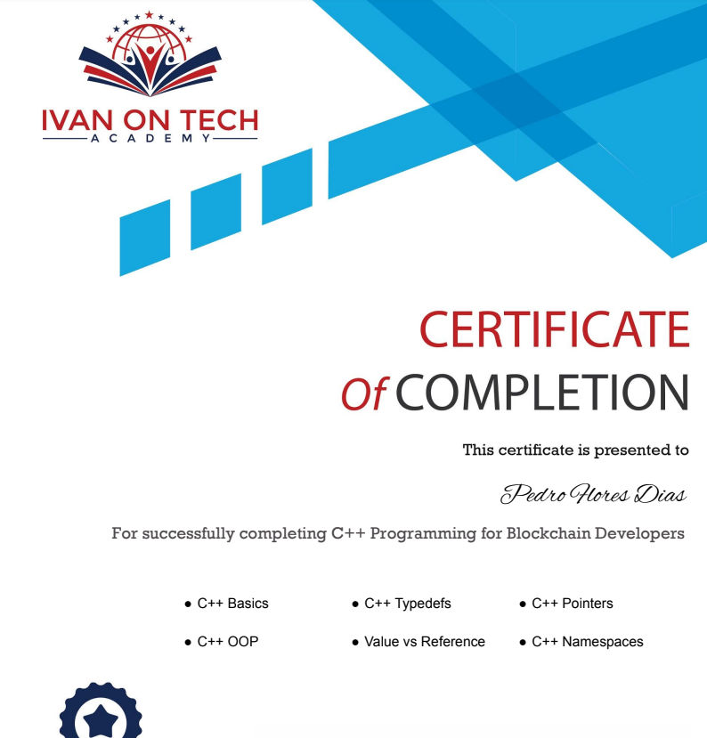

My Coding Journey
In this space, I will add some curious stories about my coding journey. It includes my progress, achievements and struggles. When possible, I will also add a screenshot to help picture a specific event. I hope you like it and that it also inspires you!
Scrimba
In some of the lessons at FreeCodeCamp, they use this interesting technology where we can stop the teacher’s video and edit their code. Sometimes that is how we do the exercise, incredible! That feature is from Scrimba, a coding platform that has many courses and collaborates with FreeCodeCamp. I have registered on their website and some days ago I got an email saying they have 74% off on the annual subscription fee and that they have launched a course called “The Frontend Developer Career Path”. I took the opportunity and bought it. I think that together with the Udemy and Harvard courses this will help me achieve my goal of becoming a Web Developer.
They even have a small course with some tips for the next year!
December 2020
FreeCodeCamp and coding challenges
Another resource I discovered was FreeCodeCamp. It has thousands of exercises and hours of coding explanations. I really enjoy practicing on their platform, it is very useful and it is free. I have been doing some Javascript lately:
There are other platforms that I sometimes use to do their coding challenges, like HackerRank and CodeWars. I also continue to code on the MIMO app almost every day.
November 2020
New computer and restarting Web Dev Bootcamp
The small desktop computer I bought a year ago is getting very slow and crashing sometimes. I guess it is not powerful enough to handle running a lot of stuff at the same time. I bought something more powerful, with a lot more RAM. It’s still not super great as it has an integrated graphic card, but it can handle a second monitor if I want.
Also, I haven’t been able to code a lot during the summer and Colt Steele just refactored the Web Dev Bootcamp so it uses the new features from ES6. With this, I decided to restart the course from the beginning. This is a way to go over some of the basic concepts and update with the new features. I also find it very motivating to start again...
October 2020
Web Dev Bootcamp Exercises
The Udemy course has been a lot of fun. The teacher is Colt Steele and he has been teaching online and local courses for a long time. He is great! There are tons of exercises and I can practice a lot of HTML, CSS and Javascript. Here are some screenshots of one exercise that we coded in the course, where we randomly generate a color and then we have to guess it based on the RGB values given:

Also, with the Web Dev Bootcamp, I am now using Visual Studio Code as my text editor. I got familiar with the key shortcuts and I think it works pretty well.
June 2020
First Github Contributions
I registered on Github some months ago and for some weeks now I started using it to upload some of my code. At first, it was the code for the Solidity solo project and now I am also uploading some of the exercises I do on the Web Dev Bootcamp. I hope that one day I will see nothing but green squares there:

May 2020
Eloquent Javascript book
By recommendation of the academy, I bought the Eloquent Javascript book. It is the 3rd edition (2018) so it already includes the ES6 Javascript update. I find it a bit difficult in terms of the language used but I guess that all programming books are like these. Anyway I am learning and going over some concepts that I already forgot. I hope this book will help me master Javascript someday!
April 2020
Solidity language and announcement of a global pandemic
Following learning the basics of HTML, CSS, and Javascript, the next course at the academy is the one about Solidity language. This is the language in which the Ethereum blockchain is coded and it is based on Javascript. I managed to fastly do the first course as it was just an introduction to the language. It was fun to start coding some smart contracts. It required installing a lot of additional programs, as we need to simulate a blockchain. The only difficulty with the first course was setting up all the coding environments. I wrote it all on a whiteboard:
And here is a screenshot of the certificate for the first course:
Early this month, a pandemic was declared and everything was shut down, due to the Coronavirus that is going around everywhere. As I have to stay home every day, I have more time to study and I started the second course of the Ethereum Smart Contract Programming series. This one is very hard and requires us to build a solo working project. The teacher gives some initial orientation but then it is all on us. I understand that in the real world this is more or less how it works but coding a dapp and smart contract by myself is very difficult. I consulted some tutors at the academy and they gave me extra help. The project consisted of building a dapp that connects to our wallet and we can try to double some amount of ETH that we decide to bet. It then randomly gives either double ETH to the player or gets the ETH from the player. This is a screenshot of the frontend:

The tutor that was helping me liked the frontend design but told me that the Solidity code had a lot to improve to get the dapp running. I struggled a lot of days with writing the code and then I realized that I lacked some Javascript fundamentals. With this situation, I decided to pause that course for a little bit and focus on mastering Javascript.
In January I found a promotion on the Udemy platform and bought a Wed Development course. I think it is time that I go back to basics and start this course. It will give me more practice with Javascript and then I can be ready to continue with Solidity programming.
March 2020
C++
Part of learning blockchain development is knowing the basis of C++. This language is known for its reliability, performance and efficiency. It is not as friendly as Javascript but I still made it through the course. I had to install and use Code::Blocks, which is an Integrated Developing Environment used for this language. Here’s a screenshot of my certificate:
February 2020
First Certificates and LinkedIn
I finally got the certificate for the course “Javascript Programming for Blockchain Developers”! Here’s a screenshot of it:
I now updated my LinkedIn (I created it a few months ago) so everyone can see I am a student of Ivan on Tech Academy. I am also uploading the certificates I get so it stays up online and public. I added some contacts and I will visit it when I have some spare time. I like to investigate what kind of jobs are open for what I am studying. Blockchain developer is in high demand!
January 2020
Harvard’s CS50 and MIMO
I discovered a platform with a lot of courses from worldwide universities and most of them we can attend for free. That’s EDX and one course that got my attention was Harvard’s CS50, Introduction to Computer Science. It is taught by Professor David Malan and it is amazing. It’s an entry-level course and is very well done. The teacher explains everything very well and he really knows how to keep our attention and motivation. At the end of each lecture, there is a Problem Set that is very very difficult. It is consuming some time but this knowledge helps me understand the essence of computer science and not just coding in general.
In addition, I downloaded an app called MIMO. It is a coding app that has a Wed Developing journey that passes through HTML, CSS, JS, and others. We can set an alarm and a daily objective so we do a bit of code every day.
December 2019
Javascript and other resources on Youtube and the Internet
On the course I am doing at the academy they started teaching Javascript. This really takes programming to a whole other level. Now I can manipulate pages and make them dynamic! jQuery is also taught, which is a library to make Javascript easier. I prefer to just code with plain Javascript but jQuery definitely helps with event handling.
To complement the course’s exercises, I am doing some extra work searching the web about the different concepts. Besides MDN (Mozilla Developer Network) I found the W3Schools page which explains the concepts very well and it’s also interactive.
On Youtube I am now following some coding channels and I really enjoy The Net Ninja. I created a local folder and I am trying their examples in Atom.
I am having fun with Javascript. I really enjoy building stuff:

November 2019
The first code - October 2019
The course introduction taught me how to set up Atom which is a text editor that I will be using to follow the lessons.
I am so excited to have just coded my first HTML tags!! Here is a screenshot from this super event:
And here is the first “website” code:

I understand that this is not much for the real world but looking at almost 30 lines of HTML I do feel like a hacker!
I figured that watching the video lessons and coding at the same time would not be practical so I bought a small desktop computer just for learning (while watching the lessons on my laptop):

October 2019
The beginning
In 2018 I got interested in reading about blockchain. It said all over the web saying how it would revolutionize the world and I wanted to know how it worked. I spent some hours on Youtube and I was discussing it with a few friends.
It is now Autumn of 2019 and since I have some free time I decided to register in a coding/blockchain academy to fully understand how it functions and to maybe code myself a token project on a blockchain?!
I already subscribed to Ivan on Tech Youtube Channel because I really liked his news about technology and blockchain so I decided to give it a try at his coding academy. I bought full-year access on it.
This academy has some courses and I will be doing the Solidity “path”, which is the coding language used to code on the Ethereum blockchain.
September 2019